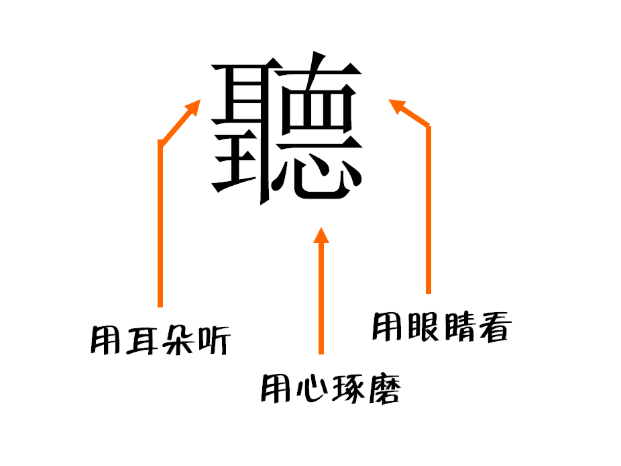
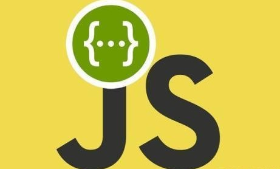

如何有效利用零碎的时间
人的学习分为两种模式，专注模式和分散模式，它们都有用，适用于不同场景。专注模式就是我们平时的上课时间or上班时间，这一时间段我们将专注进行某一项学习，所带来的成效也是最显著的；但我们现在生活中注意的点越来越多，时间也被截断成一段段的，这一段一段的时间如果我们利用起来也能给我们带来进一步的成效，也就是分散模式…

JavaScript之变量
在JavaScript变量是我们经常要用到的，也是我们必须要掌握的，变量：变化的数据，用于存储程序中变化的数据。也就是说在计算机内存中开辟一块空间，用于存储数据…

如何正确掌握人生的方向
每一个人都有青春的花季，青春年少的时候是一个重要的时期对我们整个人生来说。这个时期充满活力，魅力四射，但同时这也是一个容易迷茫的时期，在这个时候我们容易把握不住我们人生的方向，容易随波逐流…

HTML+CSS基础
一、前端 1.html：页面架构 2.css：页面布局 3.javascript：页面交互 （python） 4.jquery：js的工具包 （相当于python里面的一个库） 5.bootstrap：快速页面搭建的框架…

如何学会聆听
人与人相处时，倾听是一件非常重要的事情。也只有别人真正地信任了你，才会与你交心，所以我们要珍惜。因此我们也应该知道如何倾听别人的一些小技巧，拉近人与人之间的距离，让彼此的情谊更加深厚…

Web前端学习
优秀的Web前端开发工程师要在知识体系上既要有广度和深度！应该具备快速学习能力。前端开发工程师不仅要掌握基本的Web前端开发技术，网站性能优化、SEO和服务器端的基础知识，而且要学会运用各种工具进行辅助开发以及理论层面的知识…
太阳花|sunflower
personal blog
喜欢钢琴纯音乐、EDM、美食、追剧
大笑、发呆、犯傻是每天的常态
推荐阅读
- 如何正确把握人生的方向...
一个人都有青春的花季，青春年少的时候是一个重要的时期对我们整个人生来说...
- 在生活中需要学会聆听...
人与人相处时，倾听是一件非常重要的事情...
- web前端学习...
 所谓的前端：写网页-（指的是用户能看到的一切的交互页面）-网页、app、小程序...
所谓的前端：写网页-（指的是用户能看到的一切的交互页面）-网页、app、小程序... - 慢生活...
广州长隆欢乐世界...
- javascript...
在JavaScript变量是我们经常要用到的，也是我们必须要掌握的...